Teori til traktorførerkort
Øv teorien til traktorførerkortet: spørsmål med forklaring, prøvetester og regler for vekt, henger og fart – på norsk og uten nett.
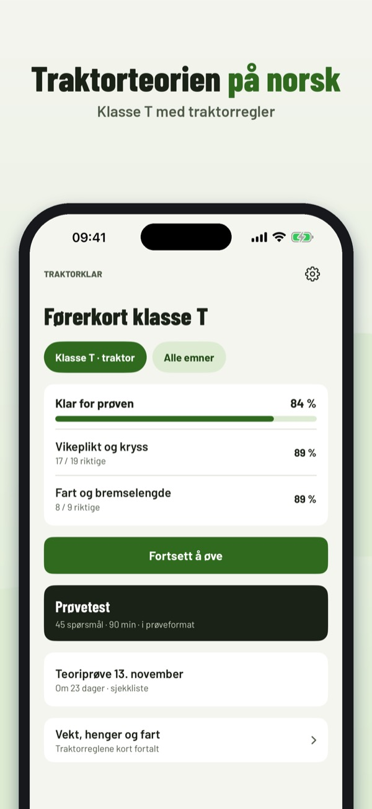
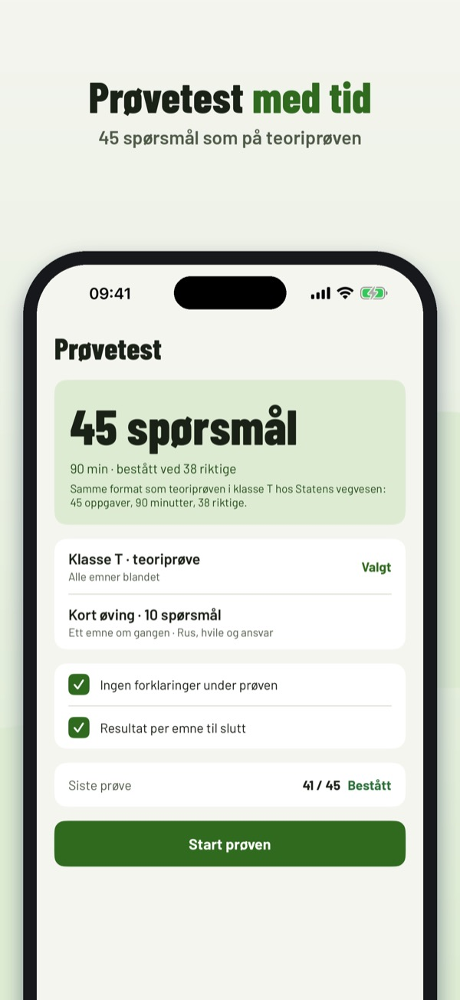
Traktorklar hjelper deg å øve teorien til førerkort klasse T – med traktorregler, ikke bilregler.
• Spørsmål per emne med forklaring til hvert svar
Du kan øve på 20 spørsmål, ordlisten og sjekklisten uten kjøp. Fullversjonen er et engangskjøp som låser opp alle spørsmål, prøvetester og statistikk. Ingen abonnement.
Traktorklar er uavhengig og ikke tilknyttet Statens vegvesen. Prøven tar du på trafikkstasjonen.
Terms of Use (EULA): https://www.apple.com/legal/internet-services/itunes/dev/stdeula/
Privacy: https://baytechbv.github.io/privacy/traktor-eu/
Kunskapsprovet för traktor
Öva teorin för traktorkort: frågor med förklaring, övningsprov och regler för vikt, släp och fart – på svenska och utan internet.
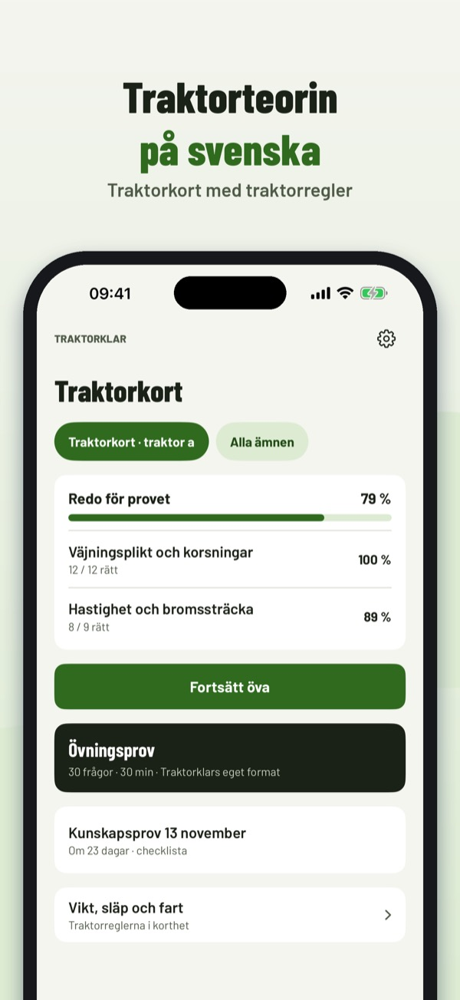
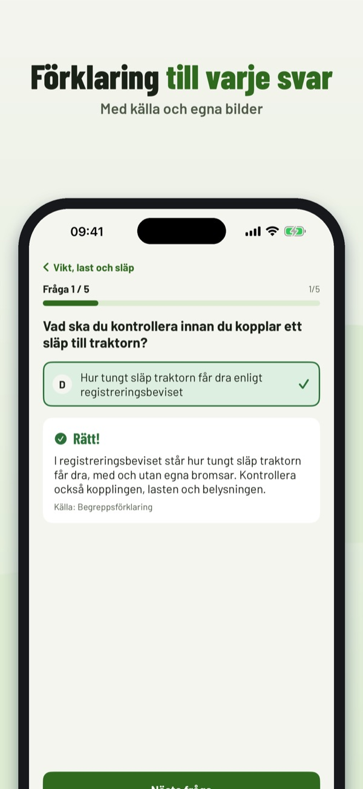
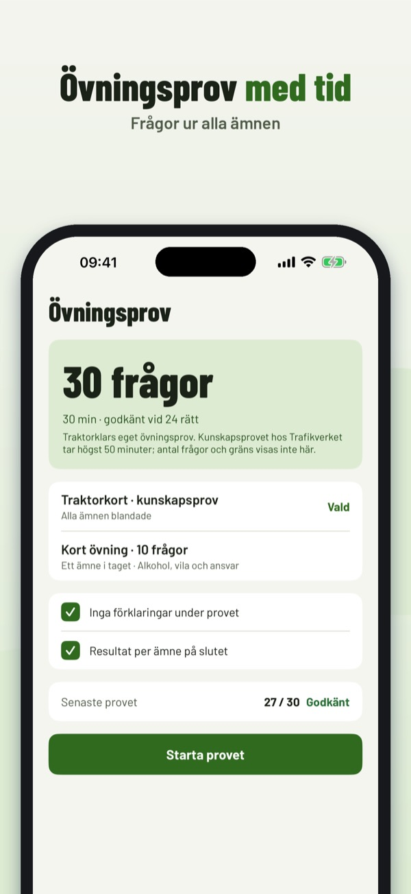
Traktorklar hjälper dig att öva inför kunskapsprovet för traktorkort – med traktorregler, inte bilregler.
• Frågor per ämne med förklaring till varje svar
Du kan öva 20 frågor, ordlistan och checklistan utan köp. Fullversionen är ett engångsköp som låser upp alla frågor, övningsprov och statistik. Ingen prenumeration.
Traktorklar är fristående och inte kopplad till Trafikverket eller Transportstyrelsen. Provet gör du hos Trafikverket.
Terms of Use (EULA): https://www.apple.com/legal/internet-services/itunes/dev/stdeula/
Privacy: https://baytechbv.github.io/privacy/traktor-eu/
Traktorikortin teoriakoe
Harjoittele T-kortin teoriaa: kysymykset selityksineen, koeharjoitus sekä painon, perävaunun ja nopeuden säännöt – suomeksi ja ilman nettiä.
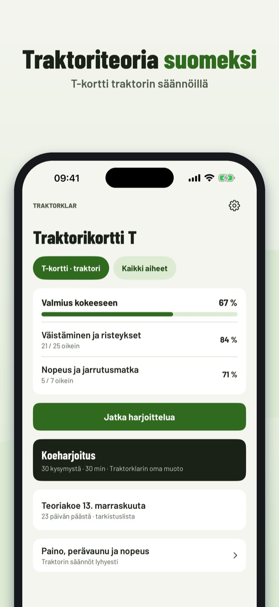
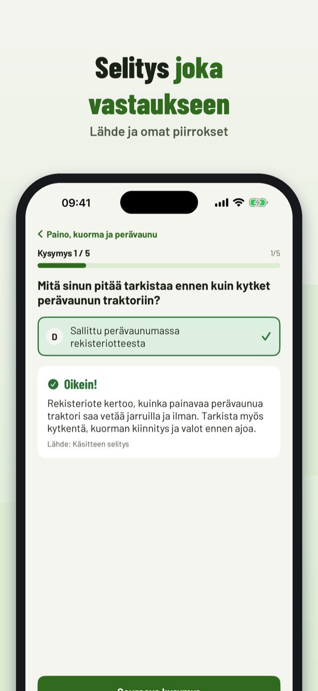
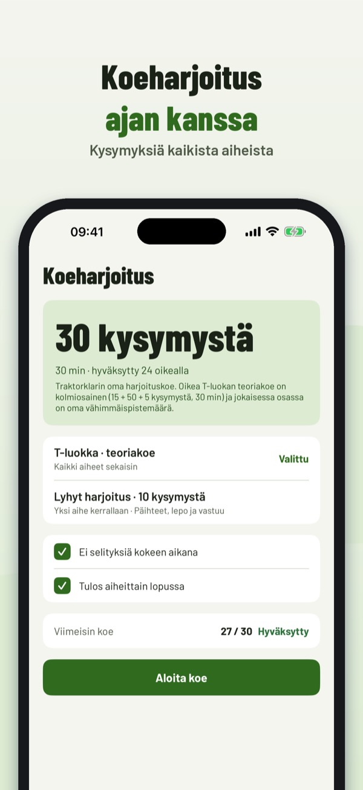
Traktorklar auttaa harjoittelemaan T-ajokortin teoriaa – traktorin säännöillä, ei henkilöauton.
• Kysymykset aiheittain, selitys jokaiseen vastaukseen
Voit harjoitella 20 kysymystä, sanastoa ja tarkistuslistaa ilman ostoa. Täysi versio on kertaosto, joka avaa kaikki kysymykset, koeharjoitukset ja tilastot. Ei tilausta.
Traktorklar on itsenäinen eikä liity Traficomiin tai Ajovarmaan. Kokeen hoidat Ajovarman kautta.
Terms of Use (EULA): https://www.apple.com/legal/internet-services/itunes/dev/stdeula/
Privacy: https://baytechbv.github.io/privacy/traktor-eu/
Teori til kørekort til traktor
Øv teorien til traktorkørekort: spørgsmål med forklaring, øveprøve og regler for vægt, trailer og fart – på dansk og uden internet.
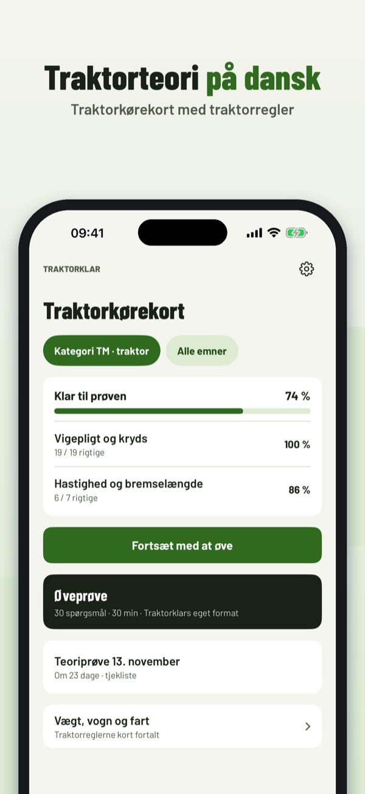
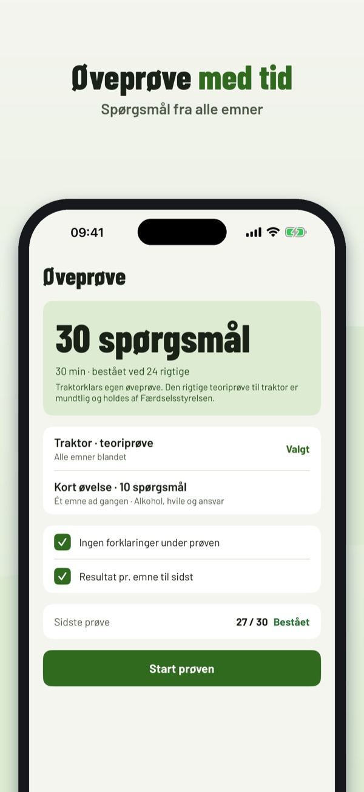
Traktorklar hjælper dig med at øve teorien til traktorkørekortet – med traktorregler, ikke bilregler.
• Spørgsmål pr. emne med forklaring til hvert svar
Du kan øve 20 spørgsmål, ordlisten og tjeklisten uden køb. Den fulde version er et engangskøb, der låser alle spørgsmål, øveprøver og statistik op. Intet abonnement.
Traktorklar er uafhængig og ikke tilknyttet Færdselsstyrelsen eller politiet. Prøven tager du hos Færdselsstyrelsen.
Terms of Use (EULA): https://www.apple.com/legal/internet-services/itunes/dev/stdeula/
Privacy: https://baytechbv.github.io/privacy/traktor-eu/
Traktor-Theorie für Österreich
Übe die Theorie für den Führerschein F: Fragen mit Erklärung, Prüfungssimulation und Regeln zu Gewicht, Anhänger und Tempo – offline.
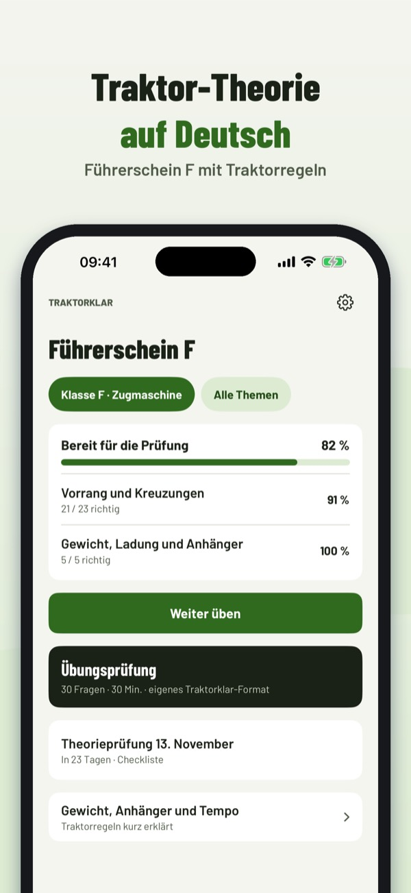
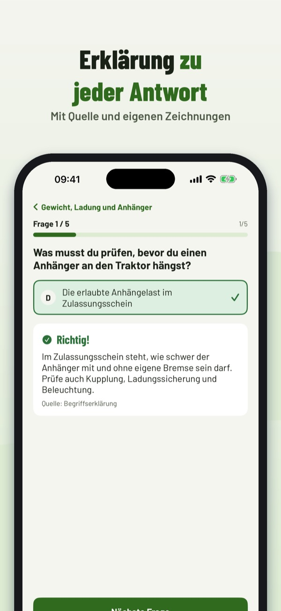
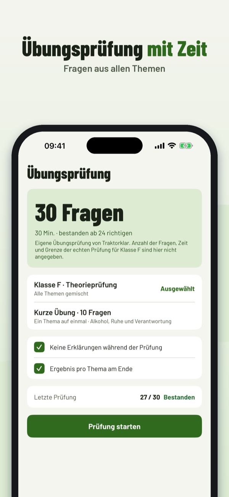
Traktorklar hilft dir, die Theorie für den Führerschein F (Zugmaschinen) in Österreich zu üben – mit Traktorregeln, nicht mit Autoregeln.
• Fragen nach Thema mit Erklärung zu jeder Antwort
20 Fragen, die Begriffe und die Checkliste kannst du ohne Kauf nutzen. Die Vollversion ist ein Einmalkauf und schaltet alle Fragen, Simulationen und die Statistik frei. Kein Abo.
Traktorklar ist unabhängig und nicht mit Behörden oder Fahrschulen verbunden. Die Prüfung legst du bei der Führerscheinbehörde ab.
Terms of Use (EULA): https://www.apple.com/legal/internet-services/itunes/dev/stdeula/
Privacy: https://baytechbv.github.io/privacy/traktor-eu/